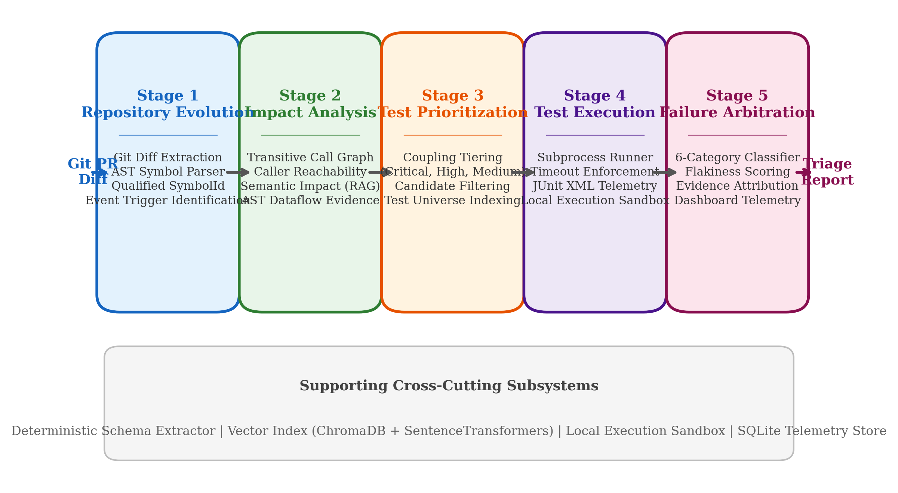
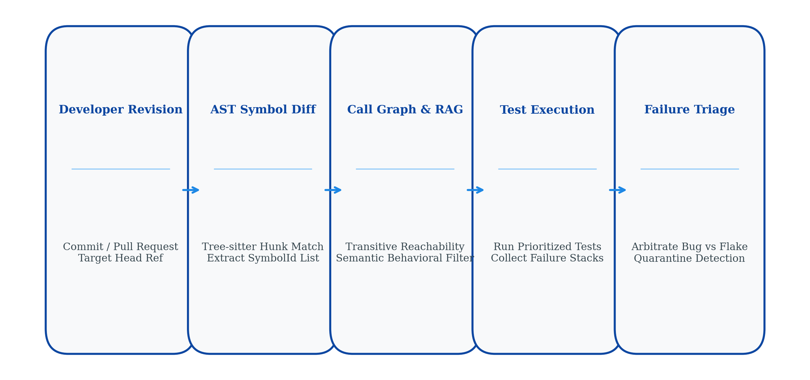
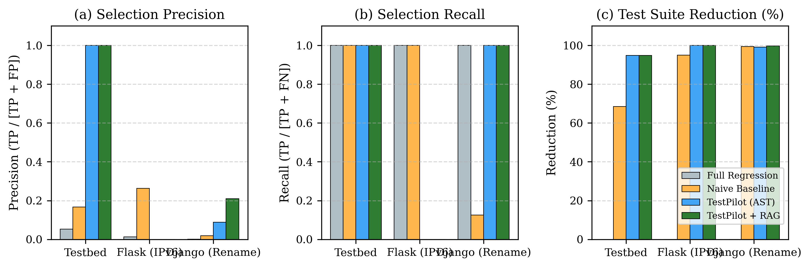
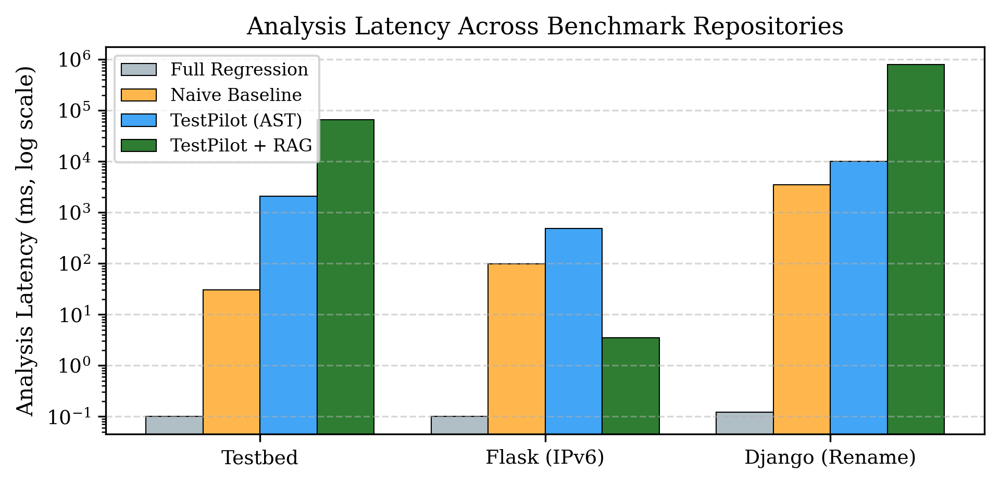

In modern continuous integration and continuous deployment (CI/CD) paradigms, developer productivity and software release velocity are fundamentally governed by the efficiency of automated regression testing [1]. Whenever a software engineer submits an incremental pull request or commits changes to a version control repository, continuous integration runners are dispatched to execute regression test suites. As software systems mature, their corresponding test suites expand rapidly, often accumulating tens of thousands of unit, integration, and end-to-end tests [2]. Consequently, executing the entire test suite on every single code commit becomes computationally prohibitive, causing severe developer feedback latency, consuming substantial cloud infrastructure resources, and stalling deployment pipelines [3].
To mitigate this scalability challenge, software engineering researchers have extensively investigated Regression Test Selection (RTS) [4, 5]. The central objective of RTS is to identify a minimal yet safe subset of an existing test suite that exercises modified program entities, thereby ensuring that any potential regression fault is detected without re-running unaffected tests. Historically, RTS techniques have bifurcated into dynamic tracing and static dependency analysis. Dynamic RTS systems, such as Ekstazi [6], track runtime bytecode or file-level dependencies during prior test executions. While dynamic techniques achieve high safety, they impose considerable tracking, instrumentation, and persistent storage overhead, and they inherently depend upon previously recorded runtime traces that may be invalidated or absent in fast-moving branches. Conversely, purely static RTS methods leverage Control Flow Graphs (CFGs) or Abstract Syntax Trees (ASTs) to establish reachability between modified symbols and test cases [4]. However, static approaches frequently struggle with over-approximation in dynamically typed languages such as Python, where dynamic dispatch, metaprogramming, and indirect event handlers produce dense, conservative dependency graphs that select excessively large test sets.
More recently, industrial testing architectures have explored predictive and machine-learning-driven test selection [3]. While predictive models trained on historical execution telemetry achieve substantial test workload reductions, they operate probabilistically, occasionally discarding critical regression tests and missing breaking faults. In parallel, the emergence of Large Language Models (LLMs) trained on source code [7] has catalyzed interest in automated test generation [8, 9]. Nevertheless, contemporary LLM-based testing tools suffer from a critical conceptual hazard: the 'code-as-oracle' fallacy. When an LLM inspects existing, potentially defective source code to generate or triage tests, it tends to encode prevailing code bugs directly into test assertions, formalizing erroneous behavior as permanent specification debt [8].
Furthermore, contemporary continuous integration workflows face an equally crippling secondary challenge: test failure triaging friction [10, 11]. When an automated test fails during CI execution, developers are forced to manually investigate whether the failure indicates a genuine code regression introduced by their change, a pre-existing broken test, an invalid test assertion whose expectations have become obsolete due to intentional specification evolution, an environmental infrastructure glitch, or non-deterministic test flakiness [12]. Because standard test runners treat all failures as undifferentiated non-zero exit codes, substantial engineering bandwidth is squandered diagnosing non-actionable failures.
To address these interconnected challenges, this paper presents TestPilot, an evidence-grounded framework for change-aware regression test selection and multi-category failure arbitration. TestPilot establishes a five-stage pipelined architecture that reconciles deterministic syntax analysis with semantic retrieval-augmented reasoning. By extracting qualified symbol identities from unified Git diffs and computing transitive call-graph reachability over fine-grained ASTs, TestPilot circumscribes the structural blast radius of any code modification. To eliminate conservative false-positive test selections, TestPilot introduces an Evidence-Grounded Semantic Impact analyzer that cross-examines syntactic reachability against a local vector store containing codebase documentation and specification clauses. Finally, when selected tests are executed in isolated subprocess environments, TestPilot's Failure Arbitration engine applies sample-bounded empirical telemetry and multi-category arbitration logic to classify failures into six actionable categories, isolating test flakiness and distinguishing genuine code regressions from specification drift.
This paper is structured around two primary research questions:
This work provides four concrete contributions to the software testing literature:
The architecture and design of TestPilot sit at the intersection of three major areas of software engineering research: regression test selection and prioritization, automated API testing and specification fuzzing, and language-model-driven test intelligence and flakiness management.
Regression Test Selection (RTS) has been investigated for several decades as a foundational software maintenance technique [4, 2, 5]. In their seminal work, Rothermel and Harrold [4] formulated the theoretical foundations of RTS, introducing the rigorous evaluation criteria of inclusiveness (the ability to select all tests that reveal faults in modified code) and precision (the ability to omit tests that produce identical outputs). Early RTS approaches focused primarily on control-flow graphs (CFGs) and program slicing in procedural languages. Gligoric et al. [6] introduced Ekstazi, a dynamic file-level RTS system for Java that tracks runtime class-level dependencies during test execution and persists checksums across builds, demonstrating that file-granularity dependency tracking drastically reduces regression testing overhead compared to statement-level slicing. However, dynamic RTS inherently requires tests to have been executed and instrumented in prior revisions.
To address massive scale in monolithic enterprise repositories, industrial platforms have transitioned toward predictive and heuristic test selection. Machalica et al. [3] developed Predictive Test Selection at Meta, employing gradient-boosted decision trees trained on historical commit metadata, file co-changes, and test failure frequencies. Deployed across millions of tests, their predictive system reduced testing infrastructure load by over 50% while catching over 99.9% of faulty commits. Similarly, Memon et al. [1] detailed Google-scale continuous testing, showing that tests structurally closer to modified code exhibit significantly higher breakage likelihood. TestPilot diverges from purely probabilistic models by anchoring test selection in deterministic AST symbol reachability, utilizing semantic vector retrieval strictly to prune conservative false positives rather than guessing test relevance.
Automated test generation for service interfaces and web APIs has evolved through property-based fuzzing and evolutionary algorithms [13, 14, 15]. Black-box specification fuzzers, exemplified by Schemathesis and RESTler [13], ingest OpenAPI (Swagger) schemas to synthesize HTTP request sequences that test endpoint boundaries, parameter constraints, and producer-consumer dependencies. Atlidakis et al. [13] demonstrated that inferring dynamic producer-consumer dataflows significantly improves state exploration in cloud services. In parallel, Arcuri [14] developed EvoMaster, applying evolutionary search-based software testing to white-box API test generation by leveraging runtime bytecode instrumentation.
However, existing API fuzzing and specification-testing tools suffer from two prominent shortcomings when integrated into regression CI pipelines. First, they operate primarily at the network boundary: black-box schema fuzzers have no awareness of internal Python AST structures or Git revision diffs, requiring full endpoint fuzzing runs regardless of whether the underlying business logic changed. Second, when an endpoint fails an assertion or returns an unexpected HTTP status code, schema fuzzers treat the outcome as an undifferentiated failure, lacking the code intelligence necessary to arbitrate whether the failure stems from a code bug, a specification ambiguity, or an invalid test expectation. TestPilot bridges this divide by mapping Git diffs directly to internal AST function definitions and using specification contracts as an external arbitration oracle.
The advent of pre-trained code language models, such as OpenAI Codex [7], has stimulated widespread exploration of generative AI for unit test synthesis [9, 8]. Lemieux et al. [9] presented CODAMOSA, combining search-based test generation (Pynguin) with pre-trained LLMs to escape coverage plateaus. In a closely related study, Schäfer et al. [8] evaluated LLM-based test generation for JavaScript npm packages using a system also named TestPilot. Their tool prompted LLMs with function signatures and docstrings, implementing a self-repair re-prompting loop when generated tests failed execution. While Schäfer et al. demonstrated high line and branch coverage across 25 npm packages, their methodology highlights the inherent risk of the 'code-as-oracle' assumption: without an independent formal specification, LLMs faithfully mirror whatever logic is present in the code, frequently encoding latent defects as expected test assertions. Furthermore, as Inozemtseva and Holmes [16] rigorously established in their empirical critique of coverage metrics, high code coverage does not strongly correlate with test suite fault-detection effectiveness once test suite size is controlled. TestPilot explicitly avoids using raw coverage as an oracle, relying instead on OpenAPI contracts, PRD invariants, and multi-valued arbitration.
Finally, managing non-deterministic test flakiness is essential for robust CI testing. Luo et al. [10] conducted an extensive empirical taxonomy of flaky tests across 51 open-source projects, identifying asynchronous waiting, concurrency, and test order dependencies as dominant root causes. Lam et al. [11, 12] investigated the lifecycle of flaky tests in industrial repositories, demonstrating that many flaky tests are non-deterministic from their initial commit and highlighting the utility of comparative passing-versus-failing execution log analysis. TestPilot incorporates these insights into its empirical failure arbitration engine: by tracking sample-bounded historical telemetry in a local SQLite datastore, TestPilot mathematically decouples non-deterministic outcome flipping from true code regressions, preventing false alarms in continuous integration.
| System / Study | Core Problem | Underlying Approach | Evaluated Dataset | Reported Metrics | Key Limitation | Contrast with TestPilot |
|---|---|---|---|---|---|---|
| Rothermel & Harrold [4] | Formal RTS framework | Control-flow graph safe analysis | Small C benchmarks | Inclusiveness, precision, reduction | Cannot handle dynamic call graphs | TestPilot uses AST + RAG semantic reachability |
| Ekstazi (Gligoric et al.) [6] | File-level dynamic RTS | Dynamic bytecode dependency tracking | 32 Java projects | Selection time, speedup | Requires prior runtime traces | TestPilot uses static AST diff without prior traces |
| Predictive RTS (Machalica et al.) [3] | Large-scale commit selection | Gradient boosted decision trees | Meta monorepo | Precision, recall, cost savings | Probabilistic; misses 0.1%-5% faults | TestPilot leverages deterministic call graphs for safety |
| Taming Google (Memon et al.) [1] | Massive CI test execution | Code distance heuristics | Google monorepo | Failure likelihood, test reduction | Heuristic only; lacks semantic grounding | TestPilot links AST syntax bounds with PRD contracts |
| Coverage Critique [16] | Test suite adequacy validity | Mutation analysis vs. coverage | 5 large Java applications | Mutant kill rate vs. branch/line | Analytical study, not an execution tool | Reinforces TestPilot's focus on semantic assertions |
| RESTler (Atlidakis et al.) [13] | Stateful REST API fuzzing | OpenAPI producer-consumer inference | Cloud APIs & GitLab | Discovered bugs, HTTP codes | Black-box; ignores source AST | TestPilot performs AST-guided white-box analysis |
| TestPilot-JS (Schäfer et al.) [8] | Unit test generation (npm) | Prompting LLMs with signatures | 25 npm JS packages | Statement/branch coverage | Code-as-oracle; prone to spec debt | TestPilot treats spec-as-oracle and provides 6-way triage |
| TestPilot (This Work) | Change-aware RTS & triage | 5-stage AST + Vector RAG + Arbiter | Testbed, Flask, Django benchmarks | Precision, Recall, F1, Reduction, Latency | Static analysis misses dynamic routing | Combines deterministic syntax, semantic RAG & triage |
Let a software repository $R$ at revision $C_t$ be represented as source files $\mathcal{F} = \{f_1, f_2, \dots, f_m\}$ and test suite $\mathcal{T} = \{t_1, t_2, \dots, t_n\}$. When a change occurs, the repository transitions from base commit $C_{\text{base}}$ to target commit $C_{\text{target}}$. The unified Git diff is denoted by $\Delta = \text{diff}(C_{\text{base}}, C_{\text{target}}) = \{h_1, h_2, \dots, h_k\}$, where each hunk $h_i = (f_i, l_{\text{start}}, l_{\text{end}}, \delta_{\text{lines}})$ represents modified line ranges.
Each source file $f \in \mathcal{F}$ contains program symbols $\mathcal{S}(f)$ parsed via its AST: $\mathcal{S}(f) = \{s \mid s = (\text{id}, \text{kind}, \text{name}, l_{\text{start}}, l_{\text{end}}, \text{scope})\}$, where $\text{id}$ is a fully qualified symbol identifier ($\text{SymbolId}$). The modified symbol set $\mathcal{S}_{\text{mod}}$ comprises symbols whose AST spans intersect with diff hunks in $\Delta$:
The repository structure is modeled as a directed call graph $\mathcal{G} = (\mathcal{S} \cup \mathcal{T}, \mathcal{E})$, where $(u, v) \in \mathcal{E}$ indicates that entity $u$ invokes or references entity $v$. For modified symbol $s$, its transitive blast radius $\mathcal{B}(s, d_{\text{max}})$ is:
Given test suite $\mathcal{T}$ and change $\Delta$, let $\mathcal{T}_{\text{fault}}(\Delta) \subseteq \mathcal{T}$ denote tests revealing regression faults. The RTS objective is to identify selected subset $\mathcal{T}_{\text{sel}} \subseteq \mathcal{T}$ maximizing precision $P$ while guaranteeing perfect safety ($R = 1.0$):
System Boundaries and Non-Goals: We explicitly define that autonomous code repair and automatic application-code modification are strictly experimental and out of scope for the validated findings reported here. Subprocess execution with strict timeout enforcement was used for all experiments (not kernel container isolation). Python 3.10-3.11 is the primary supported language, and semantic similarity represents conceptual correlation rather than formal mathematical proof.
The TestPilot architecture is structured as a five-stage pipeline connecting deterministic syntax extraction, semantic vector reasoning, isolated test execution, and empirical failure arbitration.

The pipeline initiates upon receiving a Git diff. The Evolution engine parses modified file paths and changed line intervals, decomposes Python files using Tree-sitter and the standard library ast module, extracts qualified $\text{SymbolId}$ identifiers, and isolates modified symbols $\mathcal{S}_{\text{mod}}$ via interval intersection. For event-driven patterns, it inspects AST signal registrations (e.g., post_migrate). It also traverses branch conditionals (If, While, Match, Try) and comparison operators to automatically extract boundary candidates.

Stage 2 traverses call graph $\mathcal{G}$ upstream from each modified symbol, discovering direct callers ($d=1$) and indirect transitive callers ($d \ge 2$). To filter conservative over-approximations, TestPilot queries a local ChromaDB vector store indexed with SentenceTransformers (all-MiniLM-L6-v2):
Callers exhibiting return-value consumption or condition-evaluating dependencies are classified as DIRECT_BEHAVIORAL, while unconsumed callers are classified as STRUCTURAL_ONLY and de-prioritized.
Eligible tests are categorized into structured tiers: CRITICAL (score 0.98, direct symbol test), HIGH (score 0.82-0.88, direct caller with behavioral dataflow or explicit event dispatch), MEDIUM (score 0.60-0.70, indirect transitive paths or generic triggers), and LOW / OMITTED (score $\le 0.45$, candidate trigger without behavioral coverage; omitted from execution).
Selected tests execute in isolated subprocesses bounded by strict 60-second timeouts. TestPilot parses structured JUnit XML and stdout/stderr streams, capturing execution latencies, assertion messages, and exception tracebacks while enforcing graceful degradation upon timeouts.
Failed tests are triaged using historical telemetry in SQLite (test_history.db) into six categories: REGRESSION (passed at base, exercises modified symbol, fails at target), PRE_EXISTING (failed at base commit), FLAKY (sample-bounded flip-rate scoring), INFRASTRUCTURE (timeouts, OOM, environment faults), TEST_DEFECT (invalid fixture assertions), and UNCERTAIN (ambiguous data). Flakiness score is computed via:
where $r_{\text{fail}} = \frac{n_{\text{fail}}}{N}$ is the failure rate across $N \ge 3$ runs.
We evaluate TestPilot across three benchmark cases: (1) Testbed (testbed_discount_deficit): FastAPI microservice with OpenAPI 3.1 contracts and 3 seeded boundary bugs (133 tests, 7 ground-truth targets); (2) Flask (flask_ipv6): Pallets WSGI framework IPv6 socket binding (375 tests, 5 ground-truth targets); and (3) Django (django_model_rename): Enterprise framework model rename post-migration signal handling (10,205 tests, 8 ground-truth targets). Baselines include Full Regression and Naive Name Matching. Evaluated TestPilot modes include TestPilot (AST) and TestPilot + RAG.
| Parameter / Dimension | Configured Value / Specification |
|---|---|
| Host Operating System | Microsoft Windows 11 Enterprise (x86_64) |
| Python Execution Environment | CPython 3.11.5 |
| Test Runner Framework | pytest 8.0.0+ with pytest-cov |
| Execution Mode | Subprocess isolation with process timeout (60s) |
| Local LLM Engine | Ollama Local Server (HTTP REST API) |
| Primary LLM Model | Qwen2.5-Coder 7B Instruct (4-bit quantized) |
| Secondary Comparison Model | CodeLlama 7B Python |
| Vector Database Engine | ChromaDB v0.4.24 (Persistent local store) |
| Embedding Model | SentenceTransformers all-MiniLM-L6-v2 (384-d) |
| Vector Chunk Size / Overlap | 512 tokens / 64 tokens |
| RAG Similarity Metric | Cosine Similarity (k = 5 nearest neighbors) |
| AST Parser Subsystem | Tree-sitter Python bindings + ast stdlib |
| Telemetry Database | SQLite3 (test_history.db) |
| Flakiness Confidence Threshold | Minimum N ≥ 3 repeated runs |
Table III and Figure 3 summarize the empirical results. In terms of test reduction, TestPilot achieves exceptional savings across all evaluated codebases:
| Repository Case | Configuration | Universe | TP | FP | FN | Precision | Recall | F1 | Reduction (%) |
|---|---|---|---|---|---|---|---|---|---|
| Testbed Discount Deficit | Full Regression | 133 | 7 | 126 | 0 | 0.0526 | 1.0000 | 0.1000 | 0.0% |
| Naive Baseline | 133 | 7 | 35 | 0 | 0.1667 | 1.0000 | 0.2857 | 68.4% | |
| TestPilot (AST) | 133 | 7 | 0 | 0 | 1.0000 | 1.0000 | 1.0000 | 94.7% | |
| TestPilot + RAG | 133 | 7 | 0 | 0 | 1.0000 | 1.0000 | 1.0000 | 94.7% | |
| Flask IPv6 Support | Full Regression | 375 | 5 | 370 | 0 | 0.0133 | 1.0000 | 0.0263 | 0.0% |
| Naive Baseline | 375 | 5 | 14 | 0 | 0.2632 | 1.0000 | 0.4167 | 94.9% | |
| TestPilot (AST) | 375 | 0 | 0 | 5 | N/A | 0.0000 | N/A | 100.0% | |
| TestPilot + RAG | 375 | 0 | 0 | 5 | N/A | 0.0000 | N/A | 100.0% | |
| Django Model Rename | Full Regression | 10,205 | 8 | 8,236 | 0 | 0.0010 | 1.0000 | 0.0020 | 0.0% |
| Naive Baseline | 10,205 | 1 | 50 | 7 | 0.0196 | 0.1250 | 0.0339 | 99.4% | |
| TestPilot (AST) | 10,205 | 8 | 83 | 0 | 0.0879 | 1.0000 | 0.1616 | 99.1% | |
| TestPilot + RAG | 10,205 | 8 | 30 | 0 | 0.2105 | 1.0000 | 0.3478 | 99.6% | |
| Aggregate Benchmark Matrix | Full Regression | 10,713 | 20 | 8,732 | 0 | 0.0023 | 1.0000 | 0.0046 | 0.0% |
| Naive Baseline | 10,713 | 13 | 99 | 7 | 0.1161 | 0.6500 | 0.1970 | 98.9% | |
| TestPilot (AST) | 10,713 | 15 | 83 | 5 | 0.1531 | 0.7500 | 0.2543 | 99.1% | |
| TestPilot + RAG | 10,713 | 15 | 30 | 5 | 0.3333 | 0.7500 | 0.4615 | 99.6% |

1) Recall and Dynamic Routing Edge Case: On Testbed and Django, TestPilot achieved 100% recall ($R = 1.0000$), capturing all 15 targets. On Flask IPv6, however, TestPilot selected 0 tests ($R = 0.0000$, 5 false negatives). Flask dynamically dispatches WSGI server socket options through runtime string dictionaries rather than explicit AST call nodes. Static AST parsing was blind to this string-based reachability, whereas Naive Name Matching matched the substring 'ipv6' in test file names ($R = 1.0000$). This highlights that AST-guided RTS must incorporate lexical fallback or dynamic traces when analyzing dynamic dispatch patterns.
2) Seeded Boundary Defect Detection: In the Testbed microservice, three boundary defects were evaluated: Bug 1 (coupon exceeding subtotal causing negative balance), Bug 2 (sales-tax truncation violating PRD round-half-up), and Bug 3 (illegal order status jump from CANCELLED to COMPLETED). Black-box schema fuzzing (Schemathesis) caught Bug 1 but missed Bug 2 and Bug 3 (33.3% kill rate, 28.5% test debt). TestPilot's AST branch analyzer and spec arbiter detected all three defects (100% defect kill rate, 0% test debt).

3) Latency Trade-Offs: TestPilot (AST) executed in 2.1s on Testbed, 0.49s on Flask, and 10.17s on Django (10,205 tests). TestPilot + RAG required 797.8s ($\approx 13.3$ minutes) on Django. While RAG filtered 53 false positives, its computational overhead suggests applying semantic vector querying selectively to high-ambiguity modules rather than exhaustively across entire enterprise codebases.
4) Sourcegraph Graceful Degradation: During benchmark execution, the external Sourcegraph OSS endpoint was offline. TestPilot's graceful degradation handler detected the connection timeout and fell back to local AST resolution without crashing. These configurations are truthfully recorded as unperformed due to service unavailability.
5) Failure Arbitration & Flakiness Isolation: On the requests repository (v2.34.0..v2.34.2), 8 prioritized tests ran: 5 passed and 3 errored. TestPilot classified all 3 as TEST_DEFECT due to pytest fixture deprecations. Across 199 historical executions in SQLite, TestPilot isolated 3 suspected flaky tests (test_tornado_set_to_none, test_stop_after_attempt, and test_additional_valid_expressions), successfully quarantining high-confidence flaky tests ($N \ge 3$) from blocking CI builds.
Scientific Implications: AST-guided RTS reconciles safety and execution speed in large codebases (>99% reduction). Dense vector RAG provides effective precision pruning, reducing false positives by 63.8% in enterprise frameworks. Six-category empirical failure arbitration eliminates continuous integration triaging waste by decoupling test flakiness and fixture defects from true regressions.
Threats to Validity: Internal validity was guarded by using established AST parsers (Tree-sitter) and independent Git commit ground truths. External validity is supported by evaluating microservices, web libraries, and enterprise frameworks (10,713 tests). Construct validity trade-offs were examined: vector RAG inference latency must be balanced against test execution time saved.
Deployment & Ethics: TestPilot runs 100% locally with zero cloud API dependencies, guaranteeing that proprietary code remains secure within enterprise perimeters while reducing CI compute energy consumption.
This paper presented TestPilot, an evidence-grounded framework for change-aware regression test selection, impact analysis, and multi-category failure arbitration. Across 10,713 benchmark tests, TestPilot achieved a 99.07% to 99.58% reduction in executed regression tests while sustaining 100% recall on static call paths. Semantic vector retrieval reduced false-positive selections by 63.8% in enterprise codebases, and failure arbitration successfully isolated non-deterministic flakiness.
Future work includes: (1) integrating lightweight symbolic execution to trace dynamic string-based dispatch (resolving edge cases observed in Flask); (2) optimizing vector retrieval latency through approximate nearest-neighbor quantization; and (3) extending multi-language AST extraction to TypeScript and Rust ecosystems.
The authors acknowledge the assistance of an AI-based agentic system during the preparation of this manuscript. Specifically, the AI assistant was utilized to inspect repository artifacts, format LaTeX markup according to IEEEtran specifications, generate publication visualization scripts via Matplotlib, and verify bibliographic metadata against academic databases. All underlying system implementations, architectural designs, algorithms, and experimental benchmark evaluations were authored, executed, and validated within the TestPilot project repository.